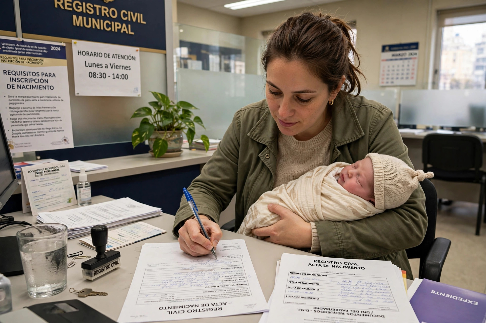
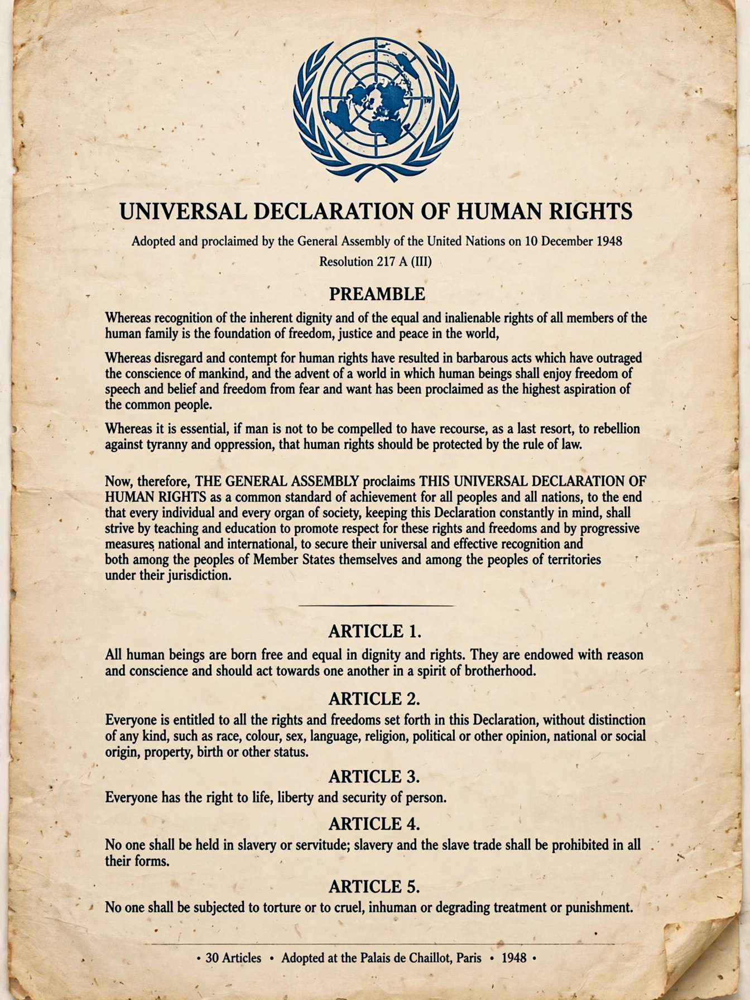

Right to a nationality


The right to a nationality is the concept in international human rights law that every person is entitled to hold a nationality (citizenship) of some state. It is proclaimed in Article 15 of the Universal Declaration of Human Rights (1948): "Everyone has the right to a nationality. No one shall be arbitrarily deprived of his nationality nor denied the right to change his nationality." Hannah Arendt described nationality as "the right to have rights", since stateless people — such as the Rohingya and the Bidoon — often find every other right practically unenforceable.
Legal sources
Elements of the right appear in several treaties: Article 24(3) of the International Covenant on Civil and Political Rights recognises every child's right to acquire a nationality; Article 7 of the Convention on the Rights of the Child adds the right to birth registration and a name; and Article 9 of the Convention on the Elimination of All Forms of Discrimination against Women guarantees women equal rights with men to acquire, change, or retain their nationality — historically a major source of statelessness where women automatically lost citizenship on marrying foreigners. The 1954 Convention protects the treatment of stateless persons, while the 1961 Convention on the Reduction of Statelessness obliges states to grant nationality to children born on their territory who would otherwise be stateless, and limits deprivation of nationality.
Arbitrary deprivation
The prohibition of arbitrary deprivation is now widely regarded as a norm of customary international law, though practice remains uneven: governments have stripped nationality from dissidents, dual nationals accused of terrorism, and entire minorities. Millions of people — UNHCR counted at least 4.4 million recorded stateless persons in the mid-2020s, with the true total believed much higher — lack any nationality, facing barriers to education, healthcare, employment, movement, and asylum procedures that presuppose a country of origin. Campaigns such as UNHCR's #IBelong initiative (2014–2024) pressed states to reform nationality laws, resolve protracted cases, and accede to the statelessness conventions.
See also
Convention Relating to the Status of Stateless Persons · Rohingya people · Bidoon · Political asylum
Categories: Human rights · Nationality law · Statelessness